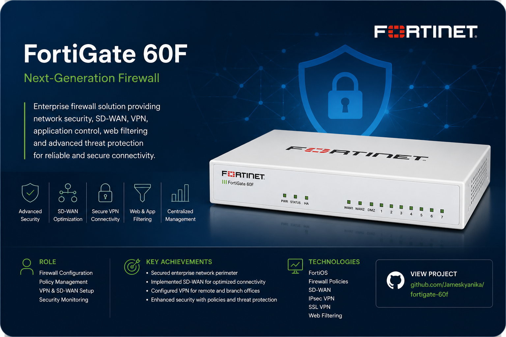
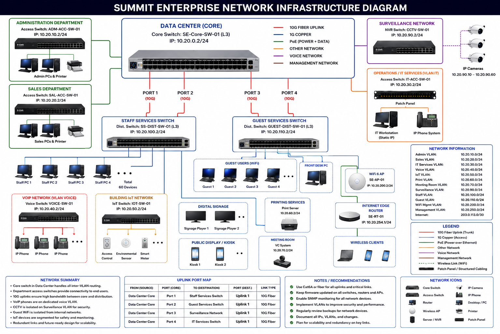
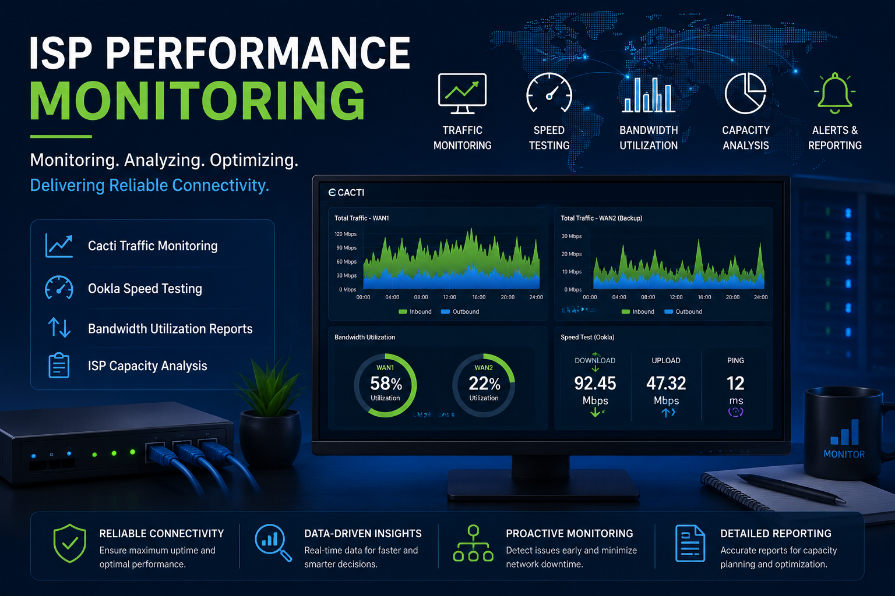
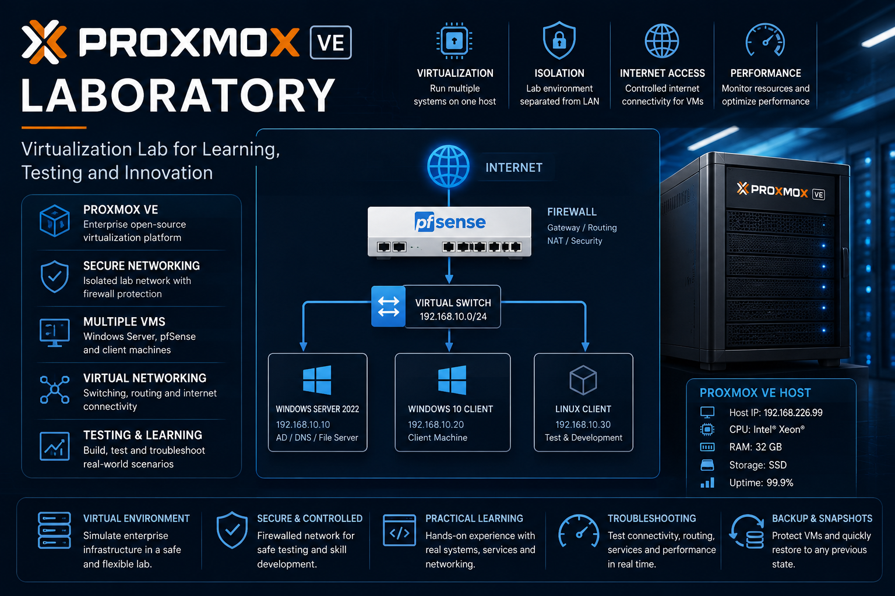
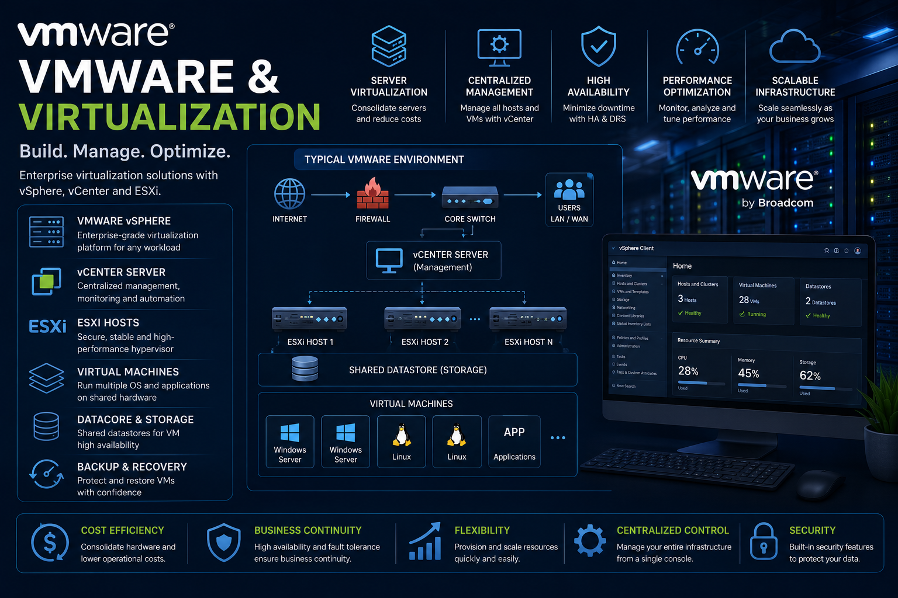
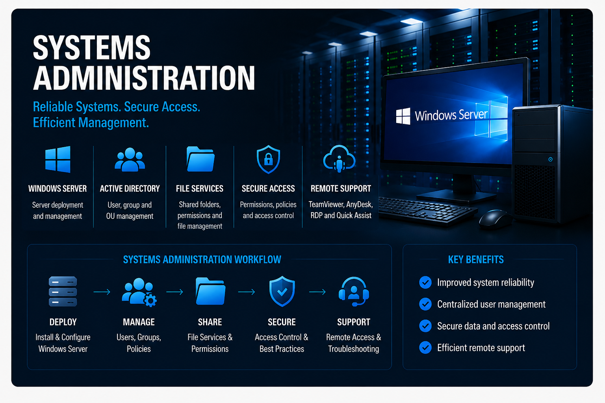

About Me
I am a Network and Systems Administrator based in Kampala, Uganda. I have experience maintaining enterprise LAN and WAN infrastructure, configuring FortiGate 60F firewall policies, administering Windows systems, monitoring ISP performance and supporting users remotely. My portfolio includes sanitized production case studies and controlled laboratory evidence covering networking, cybersecurity, virtualization and systems administration.
Technical Skills
Networking
- TCP/IP and IPv4
- VLANs
- Routing and switching
- DNS and DHCP
- NAT and VPN
- Wi-Fi and UniFi
Security & Firewalls
- FortiGate 60F
- Firewall policies
- Multi-WAN and failover
- Network segmentation
- Access control
- Security hardening
Systems Administration
- Windows Server
- Active Directory
- Group Policy
- User administration
- File and print services
- Shared-folder permissions
Virtualization
- VMware vSphere
- VMware ESXi
- VMware vCenter
- Proxmox VE
- QEMU/KVM
- pfSense virtual firewall
Monitoring
- Cacti
- Wireshark
- Ookla Speedtest
- Ping
- Traceroute
- Capacity reporting
Remote Support
- TeamViewer
- AnyDesk
- Remote Desktop
- Quick Assist
- Microsoft 365 support
- Google Workspace support
Professional Experience
Network & Systems Administrator
- Maintain enterprise LAN/WAN, switches, wireless infrastructure and business-critical connectivity.
- Configure FortiGate firewall policies, NAT, VLAN segmentation, multi-WAN routing and ISP failover.
- Monitor ISP performance using Cacti, Ookla Speedtest, ping and traceroute.
- Administer Windows systems, shared folders, user access, endpoint maintenance and remote support.
- Build and document VMware and Proxmox virtualization laboratories.
IT Support & Systems Administrator
- Supported Windows Server, Active Directory, user accounts, shared folders and business applications.
- Maintained two servers and more than 30 client computers.
- Managed role-based access, permissions, mapped drives and backups.
- Delivered onsite and remote technical support.
Graduate Trainee – Sales & Customer Support
- Supported customer acquisition, documentation, reporting, product communication and CRM updates.
- Developed strong customer-service, communication and stakeholder-management skills.
Featured Projects

FortiGate 60F Firewall
Multi-WAN migration, firewall policies, NAT, VLAN segmentation, ISP failover, security hardening and troubleshooting.
View project →
Enterprise Networking
Enterprise network architecture, switching, VLANs, wireless infrastructure, ISP connectivity and troubleshooting.
View project →
ISP Performance Monitoring
Cacti traffic monitoring, Ookla speed testing, bandwidth utilization reporting and ISP capacity analysis.
View project →
Proxmox VE Laboratory
Proxmox VE, pfSense, Windows Server, virtual networking, internet connectivity and network-isolation testing.
View project →
VMware & Virtualization
VMware vSphere, vCenter and ESXi guided laboratory exercises, screenshots and certification evidence.
View project →
Systems Administration
Windows Server, Active Directory, shared-folder permissions, user administration and secure remote-support workflows.
View project →Training & Certifications
- Google Cloud Skills Boost: Cloud Security and Cloud Security Risk Management.
- Chronicle Security Operations Fundamentals.
- Chronicle SOAR Developer.
- Detect, Investigate and Respond to Cloud Security Threats.
- Google Workspace Security, Core Services, User and Resource Management, Troubleshooting and Data Governance.
- VMware Hands-on Labs: Virtualization 101.
- Bachelor of Information Systems – Muni University.
Contact
James Kyanika
Kampala, Uganda
Telephone 1: +256 771 298 605
Telephone 2: +256 703 602 961
WhatsApp: Chat with me on WhatsApp
Email: kyanikajames@gmail.com
LinkedIn: linkedin.com/in/jameskyanika
GitHub: github.com/Jameskyanika